第7章 软件项目管理
所谓管理就是通过计划、组织和控制等一系列活动，合理地配置和使用各种资源，以达到既定目标的过程。
软件项目管理先于任何技术活动之前开始，并且贯穿于软件的整个生命周期之中。
软件项目管理过程从一组项目计划活动开始，而制定计划的基础是工作量估算和完成期限估算。
为了估算项目的工作量和完成期限，首先需要估算软件的规模。
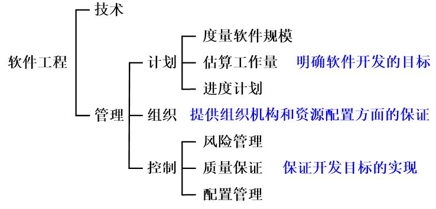
估量软件规模
行代码技术
代码行技术是比较简单的定量估算软件规模的方法。
依据以往开发类似产品的经验和历史数据，估计实现一个功能所需要的源程序行数。
当有以往开发类似产品的历史数据可供参考时，估计出的数值还是比较准确的。把实现每个功能所需要的源程序行数累加起来，就可得到实现整个软件所需要的源程序行数。
估算方法：
由多名有经验的软件工程师分别做出估计。
每个人都估计程序的最小规模(a)、最大规模(b)和最可能的规模(m)。
分别算出这3种规模的平均值、和之后，再用下式计算程序规模的估计值：（单位：LOC或KLOC）
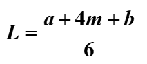
代码行技术的优点：
- 代码是所有软件开发项目都有的“产品”，而且很容易计算代码行数；
- 有大量参考文献和数据 。
代码行技术的缺点：
- 源程序仅是软件配置的一个成分，由源程序度量软件规模不太合理；
- 用不同语言实现同一个软件所需要的代码行数并不相同；
- 不适用于非过程性语言。
功能点技术
功能点技术依据对软件信息域特性和软件复杂性的评估结果，估算软件规模。
这种方法用功能点(FP)为单位度量软件规模。
功能点技术定义了信息域的5个特性：
- 输入项数(Inp)：用户向软件输入的项数，这些输入给软件提供面向应用的数据。
- 输出项数(Out)：软件向用户输出的项数，它们向用户提供面向应用的信息。
- 查询数(Inq)：查询即是一次联机输入，它导致软件以联机输出方式产生某种即时响应。
- 主文件数(Maf)：逻辑主文件的数目。
- 外部接口数(Inf)：机器可读的全部接口的数量，用这些接口把信息传送给另一个系统。
每个特征根据其复杂程度分配一个功能点数，即信息域特征系数a1，a2，a3，a4，a5，见下表。
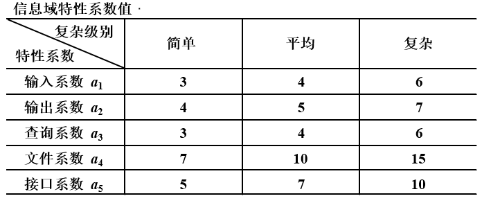
估算功能点的步骤：
1. 计算未调整的功能点数UFP
首先，把产品信息域的每个特性都分类为简单级、平均级或复杂级，并根据其等级为每个特性分配一个功能点数。
然后，用下式计算未调整的功能点数UFP： UFP=a1×Inp+a2×Out+a3×Inq+a4×Maf+a5×Inf
其中，ai(1≤i≤5)是信息域特性系数，其值由相应特性的复杂级别决定。
2. 计算技术复杂性因子TCF
这一步骤度量14种技术因素对软件规模的影响程度。在表中列出了全部技术因素，并用Fi(1≤i≤14)代表这些因素。
根据软件的特点，为每个因素分配一个从0（不存在或对软件规模无影响）到5（有很大影响）的值。
然后，用下式计算技术因素对软件规模的综合影响程度DI：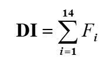
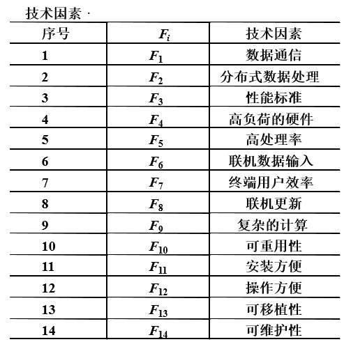
技术复杂性因子TCF由下式计算：
TCF = 0.65 + 0.01 × DI
因为DI的值在070之间，所以TCF的值在0.651.35之间。
3. 计算功能点数FP
FP = UFP × TCF
功能点技术优点：与所用的编程语言无关，比代码行技术更合理。
功能点技术缺点：在判断信息域特性复杂级别和技术因素的影响程度时主观因素较大，对经验依赖性较强。
工作量估算
软件估算模型使用由经验导出的公式来预测软件开发工作量，工作量是软件规模（KLOC或FP）的函数，工作量的单位通常是人月（pm）。
支持大多数估算模型的经验数据，都是从有限个项目的样本集中总结出来的，因此，没有一个估算模型可以适用于所有类型的软件和开发环境。
静态单变量模型
总体结构形式如下：
$$
E = A + B\times ev^C
$$
其中，A、B和C是由经验数据导出的常数，E是以人月为单位的工作量，ev是估算变量（KLOC或FP）。
1. 面向KLOC的估算模型
- Walston_Felix模型
$$
E = 5.2 \times KLOC ^ {0.91}
$$ - Bailey_Basili模型
$$
E = 5.5 + 0.73 \times KLOC ^ {1.16}
$$ - Boehm简单模型
$$
E = 3.2 \times KLOC ^ {1.05}
$$ - Doty模型（在KLOC>9时适用）
$$
E = 5.288 \times KLOC ^ {1.047}
$$
2. 面向FP的估算模型
- Albrecht & Gaffney模型
$$
E = -13.39 + 0.0545FP
$$ - Maston，Barnett和Mellichamp模型 E=585.7+15.12FP
$$
E = 585.7 + 15.12FP
$$
动态多变量模型
动态多变量模型也称为软件方程式，该模型把工作量看作是软件规模和开发时间这两个变量的函数。
动态多变量估算模型的形式如下：
$$
E = (LOC \times B^{0.333}/P)^3 \times (1/t)^4
$$
其中,
E 是以人月或人年为单位的工作量；
t 是以月或年为单位的项目持续时间；
B 是特殊技术因子，它随着对测试、质量保证、文档及管理技术的需求的增加而缓慢增加，对于较小的程序（KLOC=5~15），B=0.16,对于超过70 KLOC的程序，B=0.39；
P是生产率参数，它反映了下述因素对工作量的影响：
- 总体过程成熟度及管理水平；
- 使用良好的软件工程实践的程度；
- 使用的程序设计语言的级别；
- 软件环境的状态；
- 软件项目组的技术及经验；
- 应用系统的复杂程度。
开发实时嵌入式软件时，P的典型值为2000；开发电信系统和系统软件时，P=10000；对于商业应用系统来说，P=28000。可以从历史数据导出适用于当前项目的生产率参数值。
COCOMO2模型
COCOMO是构造性成本模型（constructive cost model)的英文缩写。
1981年Boehm在《软件工程经济学》中首次提出了COCOMO模型。
1997年Boehm等人提出的COCOMO2模型，是原始的COCOMO模型的修订版，它反映了十多年来在成本估计方面所积累的经验。
COCOMO2给出了3个层次的软件开发工作量估算模型，这3个层次的模型在估算工作量时，对软件细节考虑的详尽程度逐级增加。
3个层次的估算模型分别是：
应用系统组成模型：这个模型主要用于估算构建原型的工作量，模型名字暗示在构建原型时大量使用已有的构件。
早期设计模型：这个模型适用于体系结构设计阶段。
后体系结构模型：这个模型适用于完成体系结构设计之后的软件开发阶段。
该模型把软件开发工作量表示成代码行数（KLOC）的非线性函数：
$$
E = a \times KLOC^b \times \prod_1^{17}f_i
$$
其中，E是开发工作量（以人月为单位），a是模型系数，KLOC是估计的源代码行数，b是模型指数，fi (i=1~17)是成本因素。
每个成本因素都根据它的重要程度和对工作量影响大小被赋予一定数值（称为工作量系数）。Boehm把成本因素划分成产品因素、平台因素、人员因素和项目因素等4类。
与原始的COCOMO模型相比，COCOMO2模型使用的成本因素有下述变化：
- 新增加了4个成本因素，它们分别是要求的可重用性、需要的文档量、人员连续性（即人员稳定程度）和多地点开发。
- 略去了原始模型中的2个成本因素（计算机切换时间和使用现代程序设计实践）。
- 某些成本因素（分析员能力、平台经验、语言和工具经验）对生产率的影响（即工作量系数最大值与最小值的比率）增加了，另一些成本因素（程序员能力）的影响减小了。
为了确定工作量方程中模型指数b的值，COCOMO2采用了更加精细得多的b分级模型，这个模型使用5个分级因素Wi(1≤i≤5),其中每个因素都划分成从甚低（Wi=5)到特高（Wi=0)的6个级别，然后用下式计算b的数值：
$$
b = 1.01 + 0.01 \times \sum_{i=0}^5W_i
$$
因此，b的取值范围为1.01~1.26。显然，这种分级模式比原始COCOMO模型的分级模式更精细、更灵活。
COCOMO2使用的5个分级因素如下所述：
项目先例性：这个分级因素指出，对于开发组织来说该项目的新奇程度。
开发灵活性：这个分级因素反映出，为了实现预先确定的外部接口需求及为了及早开发出产品而需要增加的工作量。
风险排除度：这个分级因素反映了重大风险已被消除的比例。
项目组凝聚力：这个分级因素表明了开发人员相互协作时可能存在的困难。
过程成熟度：这个分级因素反映了按照能力成熟度模型度量出的项目组织的过程成熟度。
进度计划
软件项目的进度安排通过把工作量分配给特定的软件工程任务并规定完成各项任务的起止日期，从而将估算出的项目工作量分布于计划好的项目持续期内。
进度计划将随着时间的流逝而不断演化。
估算开发时间
成本估算模型也同时提供了估算开发时间T的方程：
Walstom_Felix模型
$$
T = 2.5E^{0.35}
$$原始的COCOMO模型
$$
T = 2.5E^{0.38}
$$COCOMO2模型
$$
T = 3.0E^{0.33 + 0.2 \times (b - 1.01)}
$$Putnam模型
$$
T = 2.4E^{\frac{1}{3}}
$$
其中，E是开发工作量（以人月为单位），T是开发时间（以月为单位）。
经验告诉我们，随着开发小组规模扩大，个人生产率将下降，以致开发时间与从事开发工作的人数并不成反比关系。出现这种现象主要有下述两个原因：
- 当小组变得更大时，每个人需要用更多时间与组内其他成员讨论问题、协调工作，因此增加了通信开销。
- 如果在开发过程中增加小组人员，则最初一段时间内项目组总生产率不仅不会提高反而会下降。这是因为新成员开始时不仅不是生产力，而且在他们学习期间还需要花费小组其他成员的时间
综合上述两个原因，存在Brooks规律：向一个已经延期的项目增加人力，只会使得它更加延期。
做任何事情都需要时间，因此不可能用“人力换时间”的办法无限缩短一个软件的开发时间。
Boehm根据经验指出，软件项目的开发时间最多可以减少到正常开发时间的75%。如果要求一个软件系统的开发时间过短，则开发成功的概率几乎为0。
Gantt图
Gantt(甘特)图是历史悠久、应用广泛的制定进度计划的工具。
Gantt图的主要优点：
- Gantt图能很形象地描绘任务分解情况，以及每个子任务(作业)的开始和结束时间。
- 具有直观简明和容易掌握、容易绘制的优点。
Gantt图的3个主要缺点：
- 不能显式地描绘各项作业彼此间的依赖关系；
- 进度计划的关键部分不明确，难于判定哪些部分应当是主攻和主控的对象；
- 计划中有潜力的部分及潜力的大小不明确，往往造成潜力的浪费。
工程网络
工程网络是制定进度计划时另一种常用的图形工具，它同样能描绘任务分解情况以及每项作业的开始时间和结束时间。
它能显式地描绘各个作业彼此间的依赖关系。工程网络是系统分析和系统设计的强有力的工具。
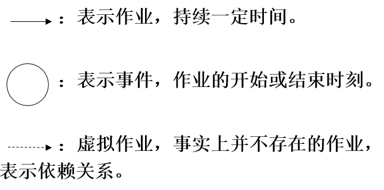
估算工程进度
工程网络必要的信息：
每个作业估计需要使用的时间：箭头长度和它代表的作业持续时间没有关系，箭头仅表示依赖关系，它上方的数字才表示作业的持续时间。
最早时刻EET：该事件可以发生的最早时间。
最迟时刻LET：在不影响竣工时间的前提下，该事件最晚可以发生的时刻。
机动时间：实际开始时间可以比预定时间晚一些，或者实际持续时间可以比预定的持续时间长一些，而并不影响工程的结束时间。
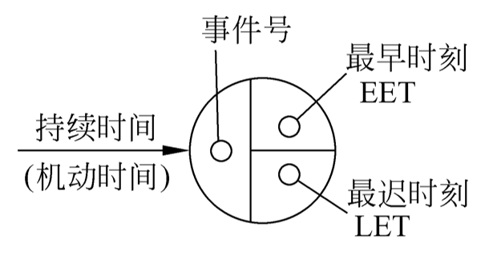
最早时刻的计算：
事件的最早时刻是该事件可以发生的最早时间。
通常工程网络中第一个事件的最早时刻定义为零，其他事件的最早时刻在工程网络上从左至右按事件发生顺序计算。
计算最早时刻EET使用下述3条简单规则：
考虑进入该事件的所有作业；
对于每个作业都计算它的持续时间与起始事件的EET之和；
选取上述和数中的最大值作为该事件的最早时刻EET。
最迟时刻的计算：
事件的最迟时刻是在不影响工程竣工时间的前提下，该事件最晚可以发生的时刻。
按惯例，最后一个事件(工程结束)的最迟时刻就是它的最早时刻。其他事件的最迟时刻在工程网络上从右至左按逆作业流的方向计算。
计算最迟时刻LET使用下述3条规则：
- 考虑离开该事件的所有作业；
- 从每个作业的结束事件的最迟时刻中减去该作业的持续时间；
- 选取上述差数中的最小值作为该事件的最迟时刻LET。
关键路径
最早时刻和最迟时刻相同的事件(机动时间为0的作业)定义了关键路径，在图中关键路径用粗线箭头表示。
关键路径上的事件(关键事件)必须准时发生，组成关键路径的作业(关键作业)的实际持续时间不能超过估计的持续时间，否则工程就不能准时结束。
机动时间
某些作业有一定程度的机动余地——实际开始时间可以比预定时间晚一些，或者实际持续时间可以比预定的持续时间长一些，而并不影响工程的结束时间。
$$
机动时间 = (LET){结束} - （EET){开始} - 持续时间 = 右下角－左上角－持续时间
$$
在制定进度计划时仔细考虑和利用工程网络中的机动时间，往往能够安排出既节省资源又不影响最终竣工时间的进度表。
人员组织
为了成功地完成软件开发工作，项目组成员必须以一种有意义且有效的方式彼此交互和通信。
管理者应该合理地组织项目组，使项目组有较高生产率，能够按预定的进度计划完成所承担的工作。
除了追求更好的组织方式之外，每个管理者的目标都是建立有凝聚力的项目组。
一个有高度凝聚力的小组由一批团结得非常紧密的人组成，他们的整体力量大于个体力量的总和。
民主制程序员组
民主制程序员组的一个重要特点是，小组成员完全平等，享有充分民主，通过协商做出技术决策。因此，小组成员之间的通信是平行的，如果小组内有n个成员，则可能的通信信道共有n(n-1)/2条。
程序设计小组的人数不能太多，否则组员间彼此通信的时间将多于程序设计时间。
民主制程序员组通常采用非正式的组织方式，也就是说，虽然名义上有一个组长，但是他和组内其他成员完成同样的任务。
民主制程序员组的优点：
- 组员们对发现错误抱着积极的态度，有助于更快地发现错误，从而导致高质量的代码；
- 小组成员享有充分民主，有高度凝聚力，学术空气浓厚，利于攻克技术难关；
- 若组内多数成员经验丰富，那么本组织方式会非常成功。
民主制程序员组的缺点：如果组内多数成员技术水平不高，或是缺乏经验的新手，由于没有明确的权威指导开发工程的进行，组员间将缺乏必要的协调，最终可能导致工程失败。
主程序员组
采用这种组织方式的原因：
- 软件开发人员多数比较缺乏经验；
- 程序设计过程中有许多事务性的工作，例如，大量信息的存储和更新；
- 多渠道通信很费时间，将降低程序员的生产率。
主程序员组的两个重要特性：
专业化。该组每名成员仅完成他们受过专业训练的那些工作。
层次性。主程序员指挥成员工作并全面负责。
典型的主程序员组由主程序员、后备程序员、编程秘书以及1~3名程序员组成。
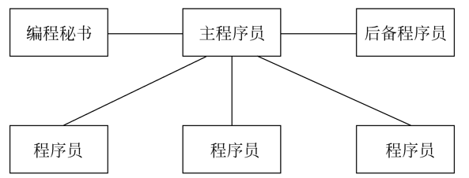
主程序员组核心人员的分工：
主程序员既是成功的管理人员又是经验丰富、技术好、能力强的高级程序员，负责体系结构设计和关键部分的详细设计，并且负责指导其他程序员完成详细设计和编码工作。
后备程序员也应该技术熟练而且富于经验，他协助主程序员工作并且在必要时（例如，主程序员生病、出差或“跳槽”）接替主程序员的工作。
编程秘书负责完成与项目有关的全部事务性工作，例如，维护项目资料库和项目文档，编译、链接、执行源程序和测试用例。
主程序员组的组织方式不切实际：
首先，主程序员应该是高级程序员和优秀管理者的结合体。通常，既缺乏成功的管理者也缺乏技术熟练的程序员。
其次，后备程序员更难找。
第三，编程秘书也很难找到。
现代程序员组
实际的“主程序员”应该由两个人共同担任：
- 一个技术负责人，负责小组的技术活动，参与全部代码审查工作，因为他要对代码的各方面质量负责；
- 一个行政负责人，负责所有非技术性事务的管理决策，不可以参与代码审查工作，因为他的职责是对程序员的业绩进行评价。行政组长应该在常规调度会议上了解每名组员的技术能力和工作业绩。
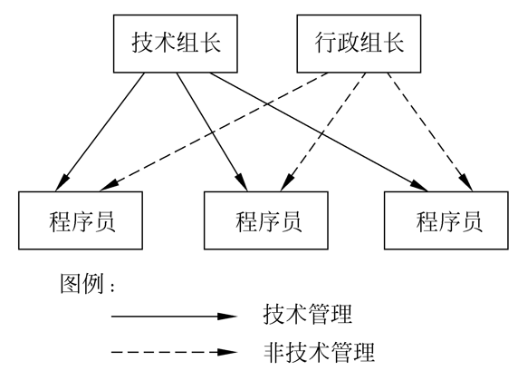
由于程序员组成员人数不宜过多，当软件项目规模较大时，应该把程序员分成若干个小组。该图描绘的是技术管理组织结构，非技术管理组织结构与此类似。
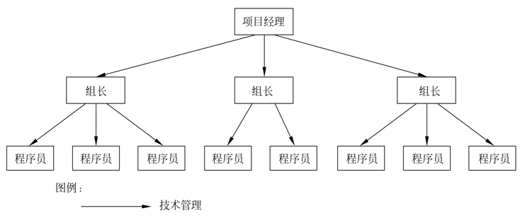
把民主制程序员组和主程序员组的优点结合起来的另一种方法，是在合适的地方采用分散做决定的方法。有利于形成畅通的通信渠道，以便充分发挥每个程序员的积极性和主动性，集思广益攻克技术难关。 上下级之间的箭头（即管理关系）仍是向下的，是集中指导下发扬民主。
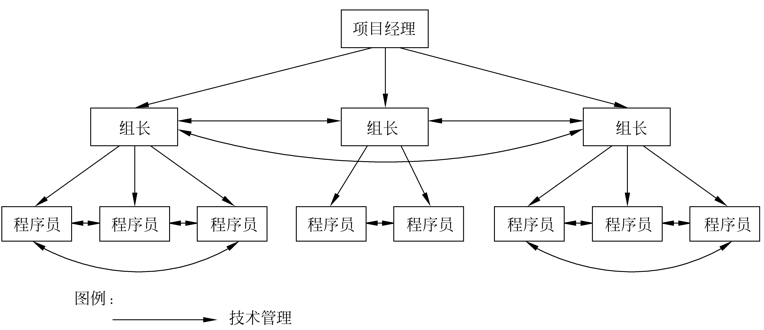
质量保证
软件质量
概括地说，软件质量就是“软件与明确地和隐含地定义的需求相一致的程度”。
具体地说，软件质量是软件与明确地叙述的功能和性能需求、文档中明确描述的开发标准以及任何专业开发的软件产品都应该具有的隐含特征相一致的程度。
定义强调了下述的3个要点：
- 软件需求是度量软件质量的基础，与需求不一致就是质量不高。
- 指定的开发标准定义了一组指导软件开发的准则，如果没有遵守这些准则，肯定会导致软件质量不高。
- 通常，有一组没有显式描述的隐含需求。如果软件满足明确描述的需求，但却不满足隐含的需求，那么软件的质量仍然是值得怀疑的。
影响软件质量的主要因素，是从管理角度对软件质量的度量。可以把这些质量因素分成3组，分别反映用户在使用软件产品时的3种不同倾向或观点。这3种倾向是：产品运行、产品修改和产品转移。
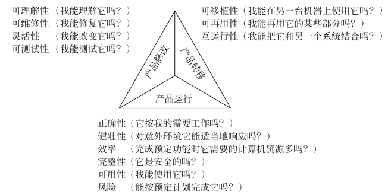
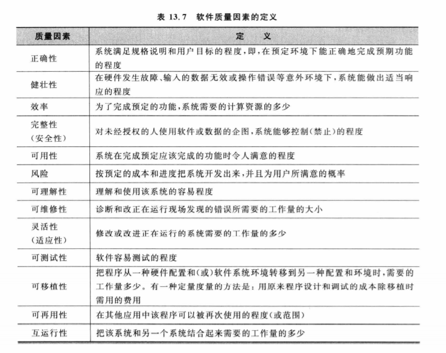
软件质量保证措施
软件质量保证（software quality assurance,SQA）的措施主要有：
- 基于非执行的测试（复审或评审），主要用来保证在编码之前各阶段产生的文档的质量；
- 基于执行的测试（软件测试），需要在程序编写出来之后进行，它是保证软件质量的最后一道防线；
- 程序正确性证明，使用数学方法严格验证程序是否与对它的说明完全一致。
1. 技术复审的必要性
正式技术复审的显著优点是，能够较早发现软件错误，从而可防止错误被传播到软件过程的后续阶段。
统计数字表明，在大型软件产品中检测出的错误，60%~70%属于规格说明错误或设计错误，而正式技术复审在发现规格说明错误和设计错误方面的有效性高达75%。由于能够检测出并排除掉绝大部分这类错误，复审可大大降低后续开发和维护阶段的成本。
正式技术复审是软件质量保证措施的一种，包括走查（walkthrough)和审查（inspection）等具体方法。走查的步骤比审查少，而且没有审查正规。
2. 走查
走查组由4~6名成员组成。走查组组长引导该组成员走查文档，力求发现尽可能多的错误。
走查组的任务仅仅是标记出错误而不是改正错误，改正错误的工作应该由该文档的编写组完成。
走查的时间最长不要超过2小时，这段时间应该用来发现和标记错误，而不是改正错误。
走查主要有下述两种方式：
参与者驱动法
文档驱动法
3. 审查
- 综述：由负责编写文档的一名成员向审查组综述该文档。
- 准备：评审员仔细阅读文档。
- 审查：评审组仔细走查整个文档。
- 返工：文档的作者负责解决在审查报告中列出的所有错误及问题。
- 跟踪：组长必须确保所提出的每个问题都得到了圆满的解决。
通常，审查组由4人组成。组长既是审查组的管理人员又是技术负责人。审查过程不仅步数比走查多，而且每个步骤都是正规的。
4. 程序正确性证明
在20世纪60年代初期，人们已经开始研究程序正确性证明的技术，提出了许多不同的技术方法。
人工证明程序正确性，对于评价小程序可能有些价值，但是在证明大型软件的正确性时，不仅工作量太大，更主要的是在证明的过程中很容易包含错误，因此是不实用的。为了实用的目的，必须研究能证明程序正确性的自动系统。
目前已经研究出证明PASCAL和LISP程序正确性的程序系统，正在对这些系统进行评价和改进。现在这些系统还只能对较小的程序进行评价。
软件配置管理
软件配置管理是在软件的整个生命期内管理变化的一组活动。
具体地说，这组活动用来：
- 标识变化；
- 控制变化；
- 确保适当地实现了变化；
- 向需要知道这类信息的人报告变化。
软件配置管理的目标是，使变化更正确且更容易被适应，在必须变化时减少所需花费的工作量。
软件配置
1. 软件配置项
软件过程的输出信息可以分为3类：
- 计算机程序（源代码和可执行程序）；
- 描述计算机程序的文档（供技术人员或用户使用）；
- 数据（程序内包含的或在程序外的）。
上述这些项组成了在软件过程中产生的全部信息，我们把它们统称为软件配置，而这些项就是软件配置项。
2. 基线
基线是一个软件配置管理概念，有助于我们在不严重妨碍合理变化的前提下控制变化。
IEEE把基线定义为：已经通过了正式复审的规格说明或中间产品，它可以作为进一步开发的基础，并且只有通过正式的变化控制过程才能改变它。
简而言之，基线就是通过了正式复审的软件配置项。
软件配置管理过程
具体来说，软件配置管理主要有5项任务：标识、版本控制、变化控制、配置审计和报告。
1. 标识软件配置中的对象
为了控制和管理软件配置项，必须单独命名每个配置项，然后用面向对象方法组织它们。可以标识出两类对象：
- 基本对象，是软件工程师在分析、设计、编码或测试过程中创建出来的“文本单元”。
- 聚集对象，是基本对象和其他聚集对象的集合。
2. 版本控制
版本控制联合使用规程和工具，以管理在软件工程过程中所创建的配置对象的不同版本。
借助于版本控制技术，用户能够通过选择适当的版本来指定软件系统的配置。
3. 变化控制
典型的变化控制过程如下：
- 接到变化请求后，首先评估该变化在技术方面的得失、可能产生的副作用、对其他配置对象和系统功能的整体影响以及估算出的修改成本。
- 为每个被批准的变化都生成一个“工程变化命令” 。把要修改的对象从项目数据库中“提取”出来，进行修改并应用适当的SQA活动。
- 最后，把修改后的对象“提交”进数据库，并用适当的版本控制机制创建该软件的下一个版本。
“提交”和“提取”过程实现了变化控制的两个主要功能：
- 访问控制：决定哪个软件工程师有权访问和修改一个特定的配置对象
- 同步控制：有助于保证由两名不同的软件工程师完成的并行修改不会相互覆盖
4. 配置审计
为了确保适当地实现了所需要的变化，通常从下述两方面采取措施：
- 正式的技术复审，关注被修改后的配置对象的技术正确性。
- 软件配置审计，通过评估配置对象那些通常不在复审过程中考虑的特征，是对正式技术复审的补充。
5. 状态报告
书写配置状态报告是软件配置管理的一项任务，它回答下述问题：
- 发生了什么事？
- 谁做的这件事？
- 这件事是什么时候发生的？
- 它将影响哪些其他事物？
能力成熟度模型
美国卡内基梅隆大学软件工程研究所在美国国防部资助下于20世纪80年代末建立的能力成熟度模型（capability maturity model，CMM)，是用于评价软件机构的软件过程能力成熟度的模型。
CMM的定义：CMM是对于软件组织在定义、实施、度量、控制和改善其软件过程的实践中各个发展阶段的描述。
多种基于CMM的模型，构成了一个CMM族：
- SW-CMM ：针对软件过程的成熟度模型 。
- P-CMM：人员能力成熟度模型。
- SA-CMM：软件获取成熟度模型。
- IPD-CMM：集成系统产品开发能力成熟度模型。
- SE-CMM：系统工程能力成熟度模型。
- SSE-CMM：系统安全工程能力成熟度模型。
能力成熟度模型的基本思想是，由于问题是由我们管理软件过程的方法不当引起的，所以新软件技术的运用并不会自动提高软件的生产率和质量。能力成熟度模型有助于软件开发机构建立一个有规律的、成熟的软件过程。
CMM的策略是：力图改进对软件过程的管理，而在技术方面的改进是其必然的结果。
对软件过程的改进，是在完成一个又一个小的改进步骤基础上不断进行的渐进过程，而不是一蹴而就的彻底革命。CMM把软件过程从无序到有序的进化过程分成5个阶段，并把这些阶段排序，形成5个逐层提高的等级。
CMM包括以下组成部分：
- 成熟度等级(Maturity Levels) ；
- 过程能力(Process Capability)；
- 关键过程域(Key Process Areas, KPA)；
- 目标(Goals)；
- 公共特性(Common Features)；
- 关键实践(Key Practices)。
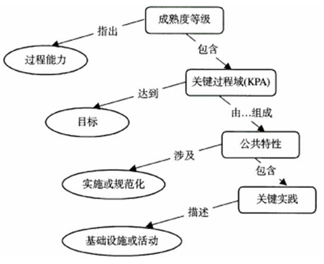
CMM的用途：
- 软件过程评估，借助CMM分析软件组织当前软件过程的状态，明确其强项和弱项
- 软件过程改进，软件开发组织用它来改进开发和维护软件的过程，根据评估结果，从低级逐极向更高级发展，制定软件过程改进的策略。
- 软件能力评价，政府或商业企业用它来评价与一个特定的软件公司签订软件项目合同的风险。
能力成熟度的5个等级从低到高依次是：
1. 初始级
软件过程的特征是无序的，有时甚至是混乱的。几乎没有什么过程是经过定义的（即没有一个定型的过程模型），项目能否成功完全取决于开发人员的个人能力。
处于这个最低成熟度等级的软件机构，基本上没有健全的软件工程管理制度，其软件过程完全取决于项目组的人员配备，所以具有不可预测性，人员变了过程也随之改变。
2. 可重复级
软件机构建立了基本的项目管理过程(过程模型)，可跟踪成本、进度、功能和质量。已经建立起必要的过程规范，对新项目的策划和管理过程是基于以前类似项目的实践经验，使得有类似应用经验的软件项目能够再次取得成功。
处于2级成熟度的软件机构的过程能力可以概括为，软件项目的策划和跟踪是稳定的，已经为一个有纪律的管理过程提供了可重复以前成功实践的项目环境。软件项目工程活动处于项目管理体系的有效控制之下，执行着基于以前项目的准则且合乎现实的计划。
3. 已定义级
软件机构已经定义了完整的软件过程（过程模型），软件过程已经文档化和标准化。所有项目组都使用文档化的、经过批准的过程来开发和维护软件。这一级包含了第2级的全部特征。
处于3级成熟度的软件机构的过程能力可以概括为，无论是管理活动还是工程活动都是稳定的。软件开发的成本和进度以及产品的功能和质量都受到控制，而且软件产品的质量具有可追溯性。这种能力是基于在软件机构中对已定义的过程模型的活动、人员和职责都有共同的理解。
4. 已管理级
软件机构对软件过程（过程模型和过程实例）和软件产品都建立了定量的质量目标，所有项目的重要的过程活动都是可度量的。该软件机构收集了过程度量和产品度量的方法并加以运用，可以定量地了解和控制软件过程和软件产品，并为评定项目的过程质量和产品质量奠定了基础。这一级包含了第3级的全部特征。
处于4级成熟度的软件机构的过程能力可以概括为，软件过程是可度量的，软件过程在可度量的范围内运行。这一级的过程能力允许软件机构在定量的范围内预测过程和产品质量趋势，在发生偏离时可以及时采取措施予以纠正，并且可以预期软件产品是高质量的。
5. 优化级
软件机构集中精力持续不断地改进软件过程。这一级的软件机构是一个以防止出现缺陷为目标的机构，它有能力识别软件过程要素的薄弱环节，并有足够的手段改进它们。在这样的机构中，可以获得关于软件过程有效性的统计数据，利用这些数据可以对新技术进行成本/效益分析，并可以优化出在软件工程实践中能够采用的最佳新技术。这一级包含了第4级的全部特征。
处于5级成熟度的软件机构的过程能力可以概括为，软件过程是可优化的。这一级的软件机构能够持续不断地改进其过程能力，既对现行的过程实例不断地改进和优化，又借助于所采用的新技术和新方法来实现未来的过程改进。